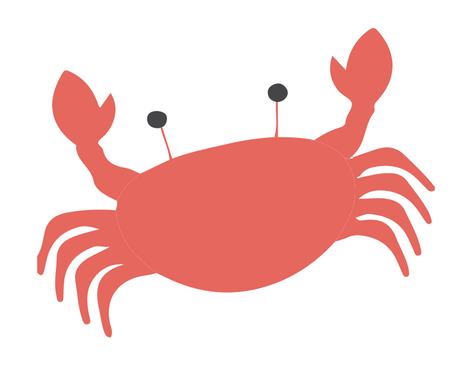

<div class="jumbotron jumbotron-fluid" id="page-top">
	<div class="top-title-container">
		
	</div>
</div>
<!--  -->
<div class="caption-citation-container">
	<div class="container">
		<div class="caption-citation">
			<p id="caption-citation-text"></p>
		</div>
		<div class="scroll-hint">
			<p>Scroll for more...</p>
		</div>
	</div>
</div>

<div class="timeline">
	<div class="timeline-line">
		<div class="timeline-dot" style="left: 5px"></div>
		<div class="timeline-dot" style="left: 100px"></div>
		<div class="timeline-dot" style="left: 150px"></div>
	</div>
</div>